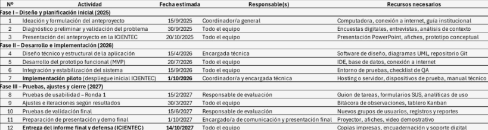
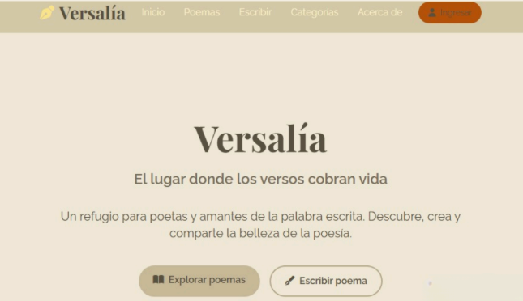
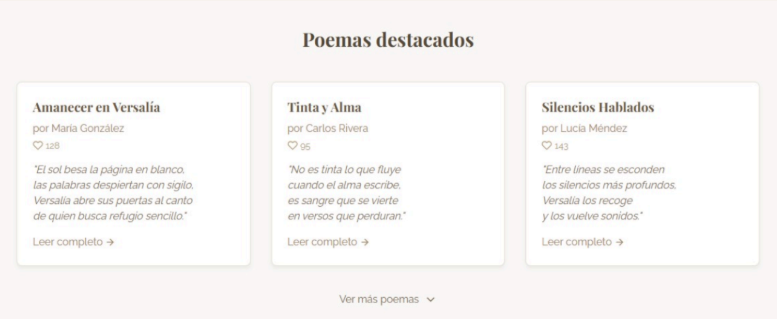

Pablo Mathias Ovando Cano
Coordinador General de Proyecto
Encargado de gestionar las actividades diarias, la documentación y la priorización de tareas para gestionar el flujo de trabajo.
Cuaderno de campo
Que esta aplicación sea un puente entre las almas, un refugio para las palabras, y una prueba de que incluso en la era digital... la poesía sigue viva.
Coordinador General de Proyecto
Encargado de gestionar las actividades diarias, la documentación y la priorización de tareas para gestionar el flujo de trabajo.
Presentador
Presentación del proyecto, comunicación de avances y apoyo en la documentación de la propuesta.
Encargado técnico
Encargada/o de la implementación en HTML y CSS, y del correcto funcionamiento del sitio.
La creación de la aplicación Versalía surge de la necesidad de fomentar el hábito de la lectura y la escritura en espacios digitales accesibles para jóvenes y amantes de la poesía. Versalía está dirigida principalmente a estudiantes y personas interesadas en la literatura, contribuyendo al desarrollo de competencias digitales, expresivas y sociales. Su implementación aportará al ámbito educativo y cultural al integrar la tecnología con el arte poético, impulsando la participación y la valoración de la palabra escrita.
El aumento del uso de herramientas digitales representa una oportunidad para impulsar la lectura y la escritura en entornos virtuales. A través de esta tendencia, Versalía busca aprovechar la tecnología para crear una comunidad donde los usuarios puedan compartir poemas, descubrir nuevas obras y fomentar el gusto por la literatura. Esta propuesta promueve la creatividad y el aprendizaje colaborativo mediante un espacio digital accesible y participativo.
El proyecto Versalía se desarrollará en el CED Miguela Rodríguez, con estudiantes del Primer Curso Bachillerato Técnico en Informática. Durante el periodo octubre-2025 y septiembre-2027 Su implementación se prevé entre marzo y noviembre de 2025, con las tres etapas diferenciadas, periodo 2025 lanzamiento de proyecto; periodo 2026 diseño, desarrollo; periodo 2027 seguimiento, ajustes y evaluación. Se utilizarán los recursos tecnológicos disponibles en la institución educativa, equipos personales de los integrantes y herramientas digitales de programación y diseño, contando con la orientación del docente guía (González & Vargas, 2020).
Fomentar el hábito de lectura y la apreciación literaria mediante una aplicación digital que permita compartir y leer poemas de manera accesible e interactiva.
El proyecto es viable porque se apoya en tecnologías web básicas (HTML y CSS) que no requieren infraestructura de servidor ni costos de licencias. El equipo cuenta con los conocimientos necesarios para su desarrollo y el tiempo disponible es suficiente para cumplir las fases planteadas en el cronograma. No se identifican riesgos técnicos ni económicos que comprometan su realización.

Espacio reservado para incorporar la imagen del prototipo visual de Versalía.

